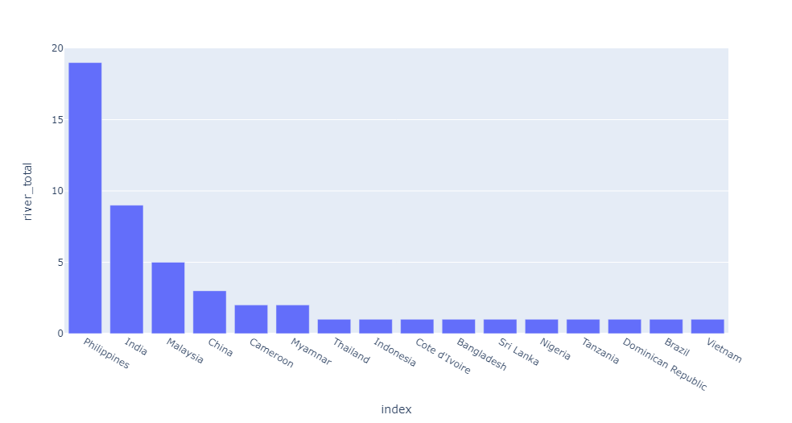
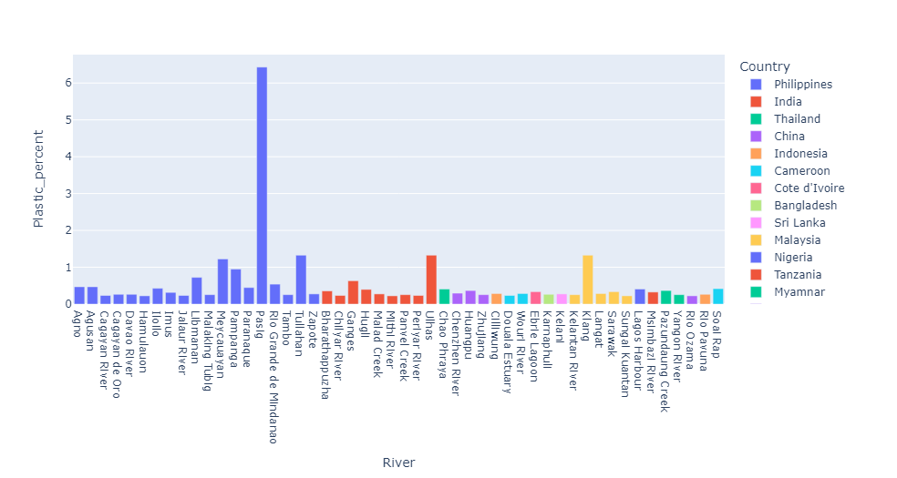
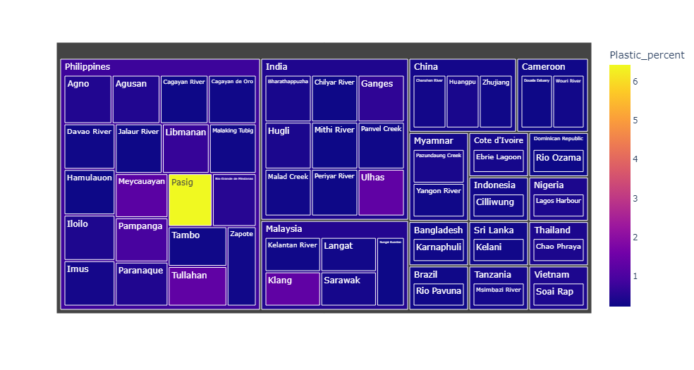

Introduction
The release of plastic waste and debris into the Earth's oceans, which can have serious environmental and ecological consequences. Plastic waste can enter the oceans through various means, including littering, improper disposal of plastic waste, and industrial waste
Once in the ocean, plastic waste can persist for decades or even centuries, as plastic is not biodegradable and instead breaks down into smaller particles known as microplastics. These microplastics can be ingested by marine organisms, causing harm to their digestive systems, and can also accumulate in the food chain, potentially harming human health.
Plastic emission in the oceans is a significant and growing problem, with an estimated 8 million metric tons of plastic entering the oceans each year. This has led to increasing efforts to reduce plastic waste and improve waste management practices to prevent plastic waste from entering the oceans. Additionally, there are ongoing efforts to clean up existing plastic waste in the oceans, although this remains a challenging and complex task due to the vast scale and remoteness of much of the plastic waste.
Relationship
By analyzing the bar graph, we can see the relationship between the amount of plastic waste in a river and its share of plastic waste in the environment. Rivers with high amounts of plastic waste but low shares of plastic waste in the environment may indicate that efforts to prevent plastic waste from entering the river are successful, while rivers with high amounts of plastic waste and high shares of plastic waste in the environment may indicate a need for increased efforts to reduce plastic waste.
Overall, a bar graph can be a useful tool for analyzing the relationship between the amount of plastic waste in a river and its share of plastic waste in the environment, helping to identify areas where efforts to reduce plastic waste can be most effective.

The purpose of the graph is to create a visual representation of the relationship between plastic waste in rivers and the countries that contribute to this waste. By color-coding the bars based on the country of origin, the visualization can help identify patterns and trends in plastic waste generation and disposal across different countries and regions. This information can be used to inform policy decisions and environmental initiatives aimed at reducing plastic waste and protecting our oceans and other natural resources.


Each rectangle in the treemap represents a different data point, with the size of the rectangle corresponding to the magnitude of the data point. The rectangles are color-coded based on the 'Plastic_percent' column of the DataFrame
The hierarchical path defined by the 'Country' and 'River' columns means that each rectangle is nested within a larger rectangle representing the next level of the hierarchy. For example, all the rectangles representing rivers in a given country would be nested within a larger rectangle representing that country as a whole.
By using color-coding to represent the magnitude of the 'Plastic_percent' data, the treemap allows for easy identification of areas with high levels of plastic waste, as well as areas where plastic waste is less prevalent. This information can be used to inform policy decisions and environmental initiatives aimed at reducing plastic waste and protecting our oceans and other natural resources.

Effects of Plastic emission
- Entanglement: Plastic debris in oceans can entangle and suffocate marine animals, leading to injuries or death.
- Ingestion: Marine animals may mistake plastic for food, leading to blockages of their digestive tracts or ingestion of toxic chemicals that can accumulate in their bodies and be passed up the food chain to humans.
- Habitat destruction: Plastic waste can smother and destroy important habitats such as coral reefs and seagrass beds.
- Pollution: Plastic debris can leach toxic chemicals into the water, harming marine life and contaminating the food chain.
- Economic impact: Plastic pollution can harm industries such as fishing, tourism, and recreation, leading to economic losses for communities that depend on these activities.
Prevention of Plastic emission
- Reduce plastic use: Reducing the amount of plastic we use in our daily lives can significantly reduce the amount of plastic that ends up in oceans. This can include using reusable bags, water bottles, and containers instead of single-use plastics.
- Proper disposal: Properly disposing of plastic waste is critical in preventing it from ending up in oceans. Recycling, composting, and properly disposing of trash can all help reduce plastic pollution.
- Regulation: Governments can implement policies and regulations to limit plastic use and require proper disposal of plastic waste.
- Education and awareness: Educating the public about the impacts of plastic pollution and ways to reduce it can help promote behavior change and encourage more sustainable practices.
- Innovation: The development of new technologies and materials that are more sustainable and biodegradable can help reduce the amount of plastic waste that ends up in oceans.